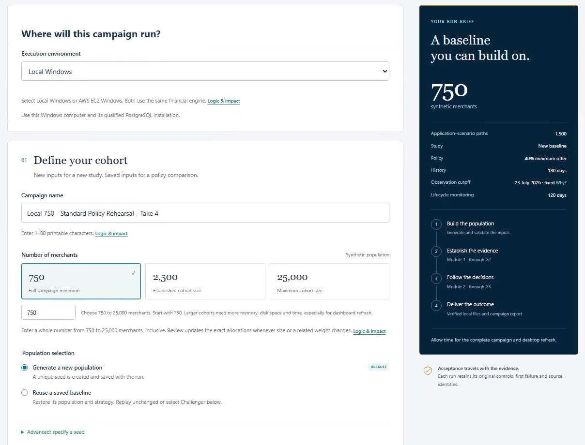

Experiment guide · Windows operator RC21 A3
Run a Windows experiment
Choose a merchant population and lending policy, submit one campaign and compare Baseline with Recession Energy. The console runs on a Windows desktop or Windows EC2 instance. Tableau and Power BI open the results saved from your submission.
Watch the GUI walkthrough and parameter guide (1:54)
Download the Windows operator ZIP (342.67 MiB) · Operator SHA-256. Save the ZIP in your Windows Downloads folder. The launch commands verify it before installation.
1. Install the Windows programs
- CPython for Windows. Choose the 64-bit installer. The examples use Python 3.14 at C:\Python314\python.exe. Set the path in both PowerShell windows if yours differs.
- PostgreSQL 17.11 for Windows x64. Install PostgreSQL Server and Command Line Tools. Keep the tools’ bin directory. The example creates a dedicated UTF-8 cluster on port 5437 alongside any existing service.
- Tableau Desktop or Tableau Desktop Public Edition. Install an edition that opens packaged workbooks locally.
- Power BI Desktop (64-bit). Install Desktop with Power BI Project (PBIR) support.
The Power BI patch uses Analysis Services client libraries. If your Desktop installation lacks them, run this command in 64-bit Windows PowerShell. Accept the NuGet provider prompt if it appears. SqlServer module.
Install-Module -Name SqlServer -RequiredVersion 22.4.5.1 -Scope CurrentUser -Repository PSGallery2. Open PowerShell, set up the operator and launch the GUI
First installation · Paste each block in order in the same 64-bit Windows PowerShell window.
- Set the paths in Windows PowerShell
For a first installation, open 64-bit Windows PowerShell on the computer that will run the campaign. Paste each block into this same window in order. The example uses a new D:\MSBF-Lab folder. Change the drive, Python location or PostgreSQL bin path if yours differs. Leave an existing installation in place and use a new folder for this setup. Set the track to EC2 only when running inside an EC2 Windows instance.
$ErrorActionPreference = 'Stop' $root = 'D:\MSBF-Lab' $release = Join-Path $root 'rc' $work = Join-Path $root 'work' $outputRoot = Join-Path $root 'results' $desktopRoot = Join-Path $root 'workbooks' $pgData = Join-Path $root 'dbdata' $python = 'C:\Python314\python.exe' $pgBin = 'C:\Program Files\PostgreSQL\17\bin' $pgPort = 5437 $track = 'Local' # Change to 'EC2' on an AWS Windows instance. $downloads = Join-Path $env:USERPROFILE 'Downloads' $zip = Join-Path $downloads 'MSBF_Portable_Windows_RC21_A3.zip' if (Test-Path -LiteralPath $root) { throw 'Choose a new installation folder.' } & $python -I -c "import sys, struct; print(sys.version); sys.exit(not ((3,11) <= sys.version_info[:2] <= (3,15) and struct.calcsize('P') == 8))" if ($LASTEXITCODE -ne 0) { throw 'Use 64-bit CPython 3.11-3.15.' } $pgVersion = & (Join-Path $pgBin 'postgres.exe') --version if ($LASTEXITCODE -ne 0 -or $pgVersion -notmatch '\b17\.11\b') { throw 'Set pgBin to the PostgreSQL 17.11 Windows x64 installation.' } - Verify and extract the operator ZIP
Save MSBF_Portable_Windows_RC21_A3.zip in Downloads. This block checks its SHA-256, extracts it and verifies its contents. Expect WINDOWS_CLEAN_EXTRACTION_VERIFIED and 1,836 files.
$expected = '1e04cb721eddbec19ffd97afbd80469ac750b148da701344d32b1457f49783f0' if ((Get-FileHash -LiteralPath $zip).Hash -ne $expected) { throw 'A3 operator checksum differs.' } if ((Test-Path -LiteralPath $release) -or (Test-Path -LiteralPath $work)) { throw 'Use fresh release and work folders.' } $null = New-Item -ItemType Directory -Path $work -Force Expand-Archive -LiteralPath $zip -DestinationPath $release $check = & $python -I -B (Join-Path $release 'VERIFY_PACKAGE.py') if ($LASTEXITCODE -ne 0) { throw 'Extracted inventory check failed.' } $inventory = ($check -join [Environment]::NewLine) | ConvertFrom-Json if ($inventory.status -ne 'EXTRACTED_FILES_VERIFIED' -or $inventory.files_checked -ne 1836 -or $inventory.inventory_sha256 -ne 'a55fa91b18d95ec6d65b75001de2a8dab68d5efa1ad4c699544852f2bc848261') { throw 'The extracted files differ from the A3 release.' } [ordered]@{ utc = [DateTime]::UtcNow.ToString('o') method = 'Expand-Archive' release_root = $release expected_sha256 = $expected archive_sha256 = $expected inventory = $inventory status = 'WINDOWS_CLEAN_EXTRACTION_VERIFIED' } | ConvertTo-Json -Depth 6 | Set-Content -Encoding UTF8 -LiteralPath (Join-Path $work 'WINDOWS_EXTRACTION.json') "WINDOWS_CLEAN_EXTRACTION_VERIFIED: $($inventory.files_checked) files" - Start a dedicated PostgreSQL cluster
This first-time block creates dbdata and starts PostgreSQL on loopback. Keep the database password you choose for setup and campaign admission. A default PostgreSQL service can continue to use its own directory and port. If 5437 is occupied, choose another free port in the first window before running this block.
if (Test-Path -LiteralPath $pgData) { throw 'The database directory must be new.' } $listeners = [Net.NetworkInformation.IPGlobalProperties]::GetIPGlobalProperties().GetActiveTcpListeners() if ($listeners.Port -contains $pgPort) { throw "Port $pgPort is occupied. Choose a free port." } & (Join-Path $pgBin 'initdb.exe') -D $pgData -U postgres --encoding=UTF8 --auth=scram-sha-256 --pwprompt if ($LASTEXITCODE -ne 0) { throw 'Database initialization stopped.' } & (Join-Path $pgBin 'pg_ctl.exe') -D $pgData -l (Join-Path $work 'postgres-startup.log') -o "-h 127.0.0.1 -p $pgPort" -w start if ($LASTEXITCODE -ne 0) { throw 'Database startup stopped. Read postgres-startup.log in work.' } $sql = "SELECT current_setting('server_version_num') AS version, current_setting('server_encoding') AS encoding, inet_server_port() AS port, current_setting('data_directory') AS directory, system_identifier FROM pg_control_system()" & (Join-Path $pgBin 'psql.exe') -X -v ON_ERROR_STOP=1 -h 127.0.0.1 -p $pgPort -U postgres -d postgres -c $sql if ($LASTEXITCODE -ne 0) { throw 'The cluster identity check stopped.' } - Qualify the installation and launch the console
Check that the preceding database row shows version 170011, UTF8, your chosen port and dbdata directory. Enter the same database password when setup prompts. On Local Windows the two attestation switches describe the new cluster you just created and the physical non-EC2 host. EC2 uses its own host record and admission check. Keep this window running. The launcher opens the browser, or you can open the private address it prints.
& (Join-Path $release 'SETUP.ps1') -Workspace $work -Output $outputRoot -Desktop $desktopRoot -PgBin $pgBin -PgPort $pgPort -PgUser postgres -PythonExecutable $python $settings = Join-Path $work 'OPERATOR.json' $reviewer = Read-Host 'Your name for the host record' $recordHost = Join-Path $release 'Operator\record_host.ps1' if ($track -eq 'EC2') { & $recordHost -Workspace $work -Track EC2 -Reviewer $reviewer & $python -I -B (Join-Path $release 'Operator\check_ec2.py') --settings $settings --output $outputRoot --prompt-password if ($LASTEXITCODE -ne 0) { throw 'EC2 admission stopped.' } } elseif ($track -eq 'Local') { & $recordHost -Workspace $work -Track Local -Reviewer $reviewer -FreshCluster -LocalHostAttested } else { throw 'Choose Local or EC2.' } & (Join-Path $release 'M02\dashboard\gui_candidate\START_CONSOLE.ps1') -Settings $settings -PythonExecutable $python
If Windows blocks scripts, open START_HERE.md in the verified operator folder and follow its Windows execution-policy instructions. On a managed machine use the approved procedure.
Already qualified this host?
On an already qualified host, use its existing settings and running database. Substitute the paths you used at setup. If you restarted Windows and started the database manually, use the pg_ctl start command from the database step with the existing data directory.
$root = 'D:\MSBF-Lab'
$release = Join-Path $root 'rc'
$settings = Join-Path $root 'work\OPERATOR.json'
$python = 'C:\Python314\python.exe'
& (Join-Path $release 'M02\dashboard\gui_candidate\START_CONSOLE.ps1') -Settings $settings -PythonExecutable $python3. Fill out the campaign, check the inputs and submit


- Choose the host and population
Choose Local Windows for a desktop run. On a Windows EC2 instance, choose AWS EC2 Windows and select Detect this EC2 instance. Under Define your cohort, name the campaign, choose the cohort size for your experiment and select Generate a new population. The published studies used 750, 2,500 and 25,000 merchants. Leave the seed blank for a fresh population.
- Set the experiment and destination
Select Baseline · establish or replay a reference for a standard-policy run. This one submission evaluates both economic scenarios. Choose the writable Local output folder from setup. For an EC2 run with S3 copying enabled, enter the existing bucket name and key prefix in their separate fields.
- Review and adjust parameters
Select Logic & impact beside a field, or open Parameter guide and use Find a setting. Read How the logic uses it, Connected impact and Constraints. Open Defaults, units & source mapping to see the registered values by scope and linked source details.
- Check whether the requested experiment is possible
Configuration review updates as you type. For example, a Minimum request of $5,050 and a Maximum request of $5,150 allow only one amount on the $100 grid, $5,100. Different merchant size tiers could never have different average requests. For a standard run, keep the original $5,000 minimum and $150,000 maximum.
- Resolve a blocked submission
Select the conflict message to jump to its field and edit the value. Awaiting input means a check needs a valid entry before it can run. A Checked option previews a correction and any conflicts that would remain. Apply your chosen edits in the fields. If the conflicting values are locked to a saved population, select a compatible record or start a new baseline.
- Review and submit
When Configuration ready for review appears, select Review & run. Check the host, policy, output path and the expected number of application–scenario paths. Each merchant has two decisions, giving 1,500 paths for 750 merchants, 5,000 for 2,500, or 50,000 for 25,000. Enter the PostgreSQL password if prompted. Select Start campaign once and record the submission ID. The engine tests the generated cohort during execution before it can pass financial acceptance.
- Track the run and open its report
In Recent campaigns, follow the phase from population generation through Module 1/G2, Module 2/G3 and dashboard preparation. Use Refresh history to update the card. Keep the host running and the launcher open. When Computation is Complete, Acceptance is Pass and Local report is Ready, select Open local report. Once Campaign workbook paths appears, the desktop files are ready to open. Power BI and Tableau can still show Pending at this point.
For S3 copies, the operator’s EC2 guide covers the instance role and AWS.Tools.S3 version 5. A local output folder is sufficient for on-host review.
Compare a higher minimum counteroffer
For a $20,000 request, a 40% minimum allows an $8,000 counteroffer. At 60%, the smallest offer becomes $12,000. To measure which merchants can still receive funding, evaluate both policies on the same population.
- Save the reference. Finish a standard-policy campaign with Baseline · establish or replay a reference. Keep its
SAVED_EXPERIMENT.json. - Keep the applicants fixed. Open a second campaign, choose Reuse a saved baseline, select the saved record and name this campaign. Choose Challenger · compare on a saved population.
- Change the linked offer limits. Under Offer access, set Minimum offer / requested amount to 60% and Maximum reduction · linked to 40%. In What was → what you propose, verify that only these two fields changed. Acknowledge the settings, select Review & run, enter the database password and start the campaign.
- Compare the outcomes. Compare Baseline with Baseline across policies, then compare Recession Energy with Recession Energy. Count funded, referred and declined applications. For merchants funded under both policies, compare the offered amount and remaining balance at day 120.
4. Open a second PowerShell window and review Tableau
- Load this submission’s workbook paths
In Recent campaigns, find the completed submission. Copy its Campaign workbook paths value ending in DESKTOP.json. From Open local report copy the Native run ID for that same submission. Open a new 64-bit Windows PowerShell window on the same computer. Paste this block and enter those two values. Set $python to the executable used in setup.
$ErrorActionPreference = 'Stop' $python = 'C:\Python314\python.exe' $manifest = (Read-Host 'Full path to this submission DESKTOP.json').Trim().Trim('"') $p = Get-Content -Raw -Encoding UTF8 -LiteralPath $manifest | ConvertFrom-Json $nativeRun = (Read-Host 'Native run ID from the same report').Trim() if (($p.identity -split '\|') -notcontains $nativeRun) { throw 'Choose the DESKTOP.json for this native run.' } $p | Format-List tableau_entry, setup_pbix, power_bi_entry, power_bi_final - Open Tableau and inspect the paired decisions
Open the packaged TWBX. If Windows asks for an app, open Tableau Desktop or Tableau Public Desktop and use File → Open with the tableau_entry path above. With filters at (All), compare Matched Applications, Different Decisions, Baseline Authorized and Stress Authorized with the local report. Select a nonempty decision-matrix cell and follow one merchant across both scenarios. The portfolio review uses the included extract.
Invoke-Item -LiteralPath $p.tableau_entry
5. Open the setup PBIX, generate the project, refresh and reopen
- Open the Power BI setup workbook
Close any other Power BI reports after saving your work. Open the setup PBIX from this submission. Wait until its report canvas appears and loading finishes. Leave the cached data as it opened. Keep the setup PBIX open while running the next command in the second PowerShell window.
Invoke-Item -LiteralPath $p.setup_pbix - Generate the project for this cohort
Run this while the setup file is the only open Power BI model. A successful first run prints OPEN_COHORT_REPORT and SAVE_REOPEN_PBIX. If a ready project already exists, the script verifies it and prints OPEN_COHORT_REPORT. If the command reports a missing Analysis Services DLL pair, install the SqlServer PowerShell module as described under prerequisites and rerun this command.
& $p.patch_script -Apply -Python $python - Close the setup PBIX and open the generated report
In Power BI Desktop close the setup PBIX and choose Don’t save if asked. In the second PowerShell window, open the project file printed beside OPEN_COHORT_REPORT. If Windows asks which app should open definition.pbir, select Power BI Desktop.
Invoke-Item -LiteralPath $p.power_bi_entry - Refresh and save as PBIX
In the generated Power BI report choose Home → Refresh and wait for the refresh to finish. In File → Save as, select Power BI Desktop file (*.pbix). Use the line below to copy the full final path and paste it in the File name field. Save, then close the report.
Set-Clipboard -Value $p.power_bi_final - Reopen and check the saved report
Reopen the saved PBIX. On P01, switch between Baseline and Recession Energy and compare funded accounts and decision outcomes with the local report. For a formal desktop validation, the second line prints the path to the observation and recording instructions. After recording, select Refresh local report only.
Invoke-Item -LiteralPath $p.power_bi_final Join-Path $p.data_root 'docs\NATIVE_VALIDATION.md'